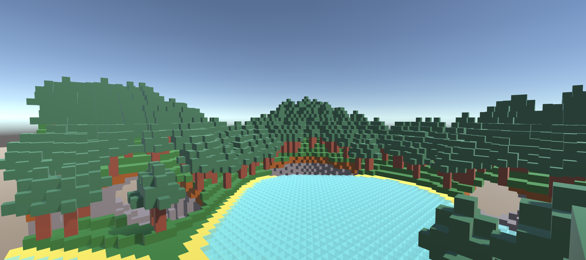

Génération procédurale
Un travail de génération procédurale de paysages, dans le style de Minecraft
La méthode
Ce projet était réalisé comme un entrainement pour mieux cerner les méthodes de génération procédurales de terrain, en utilisant du Perlin Noise dans Unity. Ce projet a été réalisé en groupe, et j'étais en charge de la structure principale du code, et de veiller à la bonne intégration des différentes surcouches de génération, comme les arbres ou la mer.
Ci-dessus on peut voir une génération possible avec le résultat final. Le module est actuellement capable de générer un terrain avec différentes élévation, d'ajouter des couches de différents matériaux (comme la terre, la pierre, ...), d'ajouter de l'eau et des plages de sable autour, de creuser des cavernes, et enfin d'ajouter des arbres et des forêts.
Le module a été penser pour avoir un maximum de flexibilité dans la génération du monde, et on peut facilement modifier des paramètres pour l'impacter de manière significative, par exemple en changeant le niveau de la mer, en modifiant l'élévation du terrain ou le contraste pour avoir un terrain presque plat ou au contraire des falaises escarpées, en changeant la génération des caverses pour modifier leur forme et leur taille, encore la densité des forêts par exemple. Le module contient également un système de biomes, qui permet de contrôler localement certains paramètres, comme par exemple la fréquence d'apparitions des arbres.
Ci-dessous on peut voir les résultats en temps réel d'une des premières fonctions développées qui génère des réseaux de cavernes, avec ici des paramètres très larges avec beaucoup d'espaces libres. La méthode utilisée ici est similaire à du Perlin Noise classique, mais sur un plan 3D à la place, ce qui nous permet d'obtenir des résultats satisfaisants.
L'optimisation des performances était une considération importante pendant le projet, même si la priorité restait seulement l'aspect génération, et le temps a été trop limité pour arriver à une optimisation tout à fait satisfaisante. De grandes améliorations ont été réalisées cependant, ce qui a permit de passer d'une génération initiale par chunk d'environ 12s, à un peu plus d'une seconde, augmentant également les performances en jeu, passant de 5 IPS à une trentaine, ce qui reste décevant. Le module des cavernes que j'avais réalisé est bien mieux optimisé, et appliquer les mêmes techniques à l'ensemble du projet permettrait de multiplier des performances de manière significative, étant capable de générer un chunk en moins de 0.2s, et offrant des performances irréprochables en jeu. Le système de chunks étant déjà implémenté, même si sous-utilisé dans l'état actuel, permettrait d'étaler la génération en fonction des déplacements du joueur, et d'éviter le frontload.